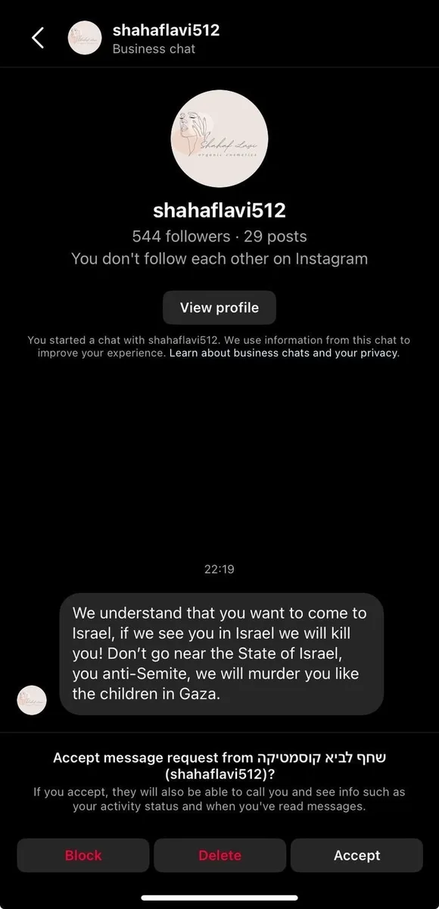
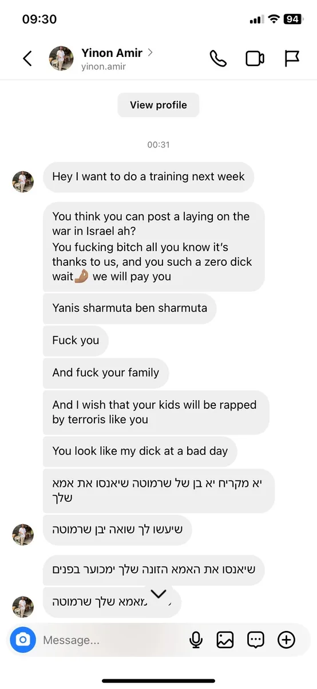
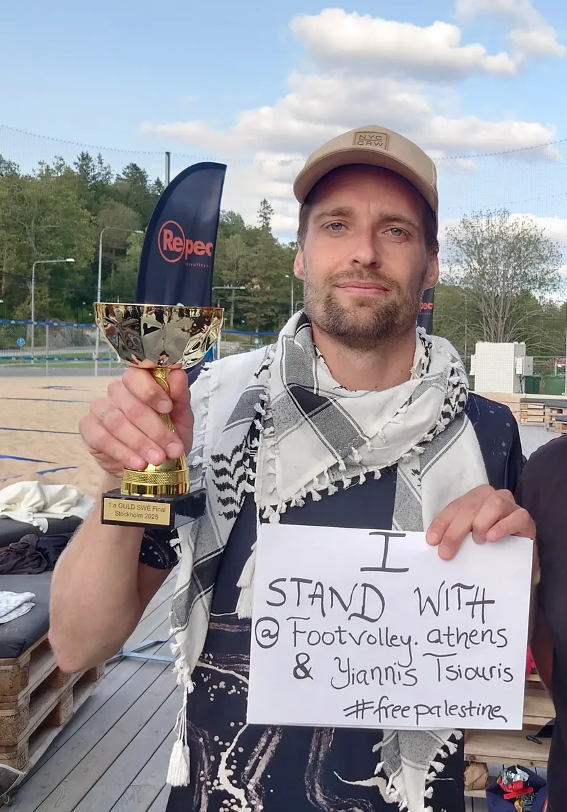
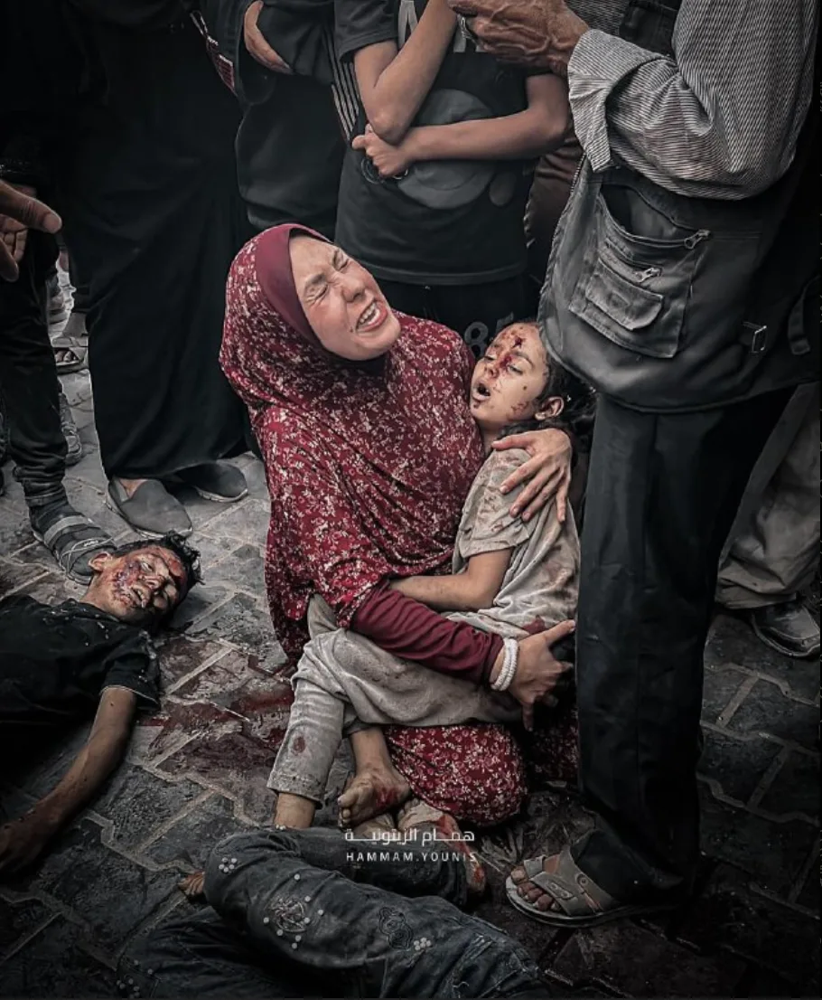

About
Created in 2026, Footvolley Resistance was formed as an urgent initiative to protect our community, our players, and the spirit of the sport itself.
Footvolley was built by passionate people, local communities, friendships, neighborhoods, training groups, and human connection. Across the world, it remains a deeply welcoming and kind environment where people from different cultures meet through sport. That space must be protected!
Why did we create FTVR?
FIRST Because the footvolley community can no longer ignore behaviors and realities that directly threaten the safety, dignity, and humanity of players and people around them. This includes death threats against players and their families, public and private harassment, open support for genocide and war crimes, normalization of hatred, and the growing acceptance of blood-money and political laundering inside the global footvolley environment. We must be absolutely clear about what is unacceptable. The overwhelming majority of these incidents have involved players from or associated with the apartheid ethno-supremacist state of Israel and their supporters — and in most cases the Israel Footvolley Association (IFA) was very well aware of, or even igniting them. It is important to state this clearly and honestly. At the same time, any similar behavior from any person, group, or country would be equally unacceptable.

Posted on Instagram by the Israeli account @mikasa.tu.kasa — a bomb casing signed with Hebrew text and "Footvolley ❤️". The inscriptions translate as follows:
Printed text: "That the whole world knew — In memory of Dor Malka" (שכל העולם ידע — לזכר דור מלכה)
Handwritten text: "The whole world knew — Dor Malka — Footvolley ❤️" (כל העולם ידע — דור מלכה — Footvolley ❤️)
The post was tagged with: @footvolleytlv, @worldfootvolley, @israel_footvolley, @arenasclub_ftv, @paulinhoftv, @bruno_foks.
Video posted by @nadav__navon (9 January 2024) of Israeli footvolley players playing altinha inside a raided Palestinian home — while serving the IDF during the ongoing genocide in Gaza. Caption in Hebrew: "קצת מהחוויה שלי בשלושה חודשים האחרונים שלא הייתי בוחר לעבור אחרת 🇮🇱" — Translation: "A bit of my experience from the last three months — I wouldn't have chosen to go through it any differently 🇮🇱"

DavidBuz (@david_bpt) — Israeli footvolley player. Messages include: "Israeli Mossad hunts the people on the evil side, be careful what you say or do", "May all Gaza turns into hell after what they did to us, they deserve nothing more. Everyone there is involved. Stop being blind", "Israel will conquer it eventually. And then we will take care of Turkey (for you, the Greek people) because they host Hamas terrorist now."

Lidor Franko (@liderfranko14) — Israeli footvolley player. Messages include: "From now on you are in trouble, no Jew will support you anymore, if you are all for them, go live in Gaza and Inshallah they will rape you there", "F**k you", "You are f**king dead" — direct death threats against a footvolley player for sharing information about civilian casualties in Gaza.

Ron Ben Ishai (@ronbenishai.ftv) — Israeli footvolley player (verified account). Messages include: "I will personally take care no one from Israel will ever train/work/pay/collaborate anything with you. Good luck. Keep supporting terror organisations and delegitimise Israel people." — economic threats and intimidation against a player who posted about Palestinian casualties.

Shahaf Lavi (@shahaflavi512) — Account associated with Israel. Message: "We understand that you want to come to Israel, if we see you in Israel we will kill you! Don't go near the State of Israel, you anti-Semite, we will murder you like the children in Gaza." — explicit death threats and a shocking admission referencing the killing of children in Gaza. (Hebrew account name: שחף לביא קוסמטיקה)

Shaul Inbal (@shaulinbal7) — Israeli footvolley player. Messages include: "This one is going to be like people in Palestine — Dead 💀", "I have my people in Greece that can help me cut down your business in a legal way", "Be careful on your business", "Retard", "Bitch" — death threats, business intimidation, and abusive language.

Yinon Amir (@yinon.amir) — Israeli footvolley player. Messages include death threats, rape threats against family members, and Holocaust references. English: "You f**king b**ch all you know it's thanks to us", "F**k you", "And f**k your family", "And I wish that your kids will be raped by terrorists like you", "Yanis sharmuta ben sharmuta" (Yanis, whore son of a whore).
Hebrew messages translated:
- "יא מקריח יא בן של שרמוטה שיאנסו את אמא שלך" — "You baldy, you son of a whore, may they rape your mother"
- "שיעשו לך שואה יבן שרמוטה" — "May they give you a Holocaust, you son of a whore"
- "שיאנסו את האמא הזונה שלך ימכוער בפנים" — "May they rape your whore mother, you ugly face"
- "אמא שלך שרמוטה" — "Your mother is a whore"
...this goes on and on, and this is just the tip of the iceberg. Similar incidents and threats of death and rape aimed at various footvolley players, their families and friends have been made both publicly and privately...
SECOND To show that there are players, organizers, coaches, and communities who stand with humanity and stand with each other. People who refuse to normalize genocide, apartheid, war crimes, crimes against humanity, racism, intimidation, or the use of blood-money to buy silence and legitimacy — both on and off the footvolley court.

Footvolley taught me many things: respect, unity, connection, community. But in times like these, sport cannot exist outside society. "No politics" has never truly existed — especially when human lives are being destroyed in front of our eyes.
Across Europe and beyond, wars, occupation, forced displacement, and mass civilian suffering are realities of our time. And in Gaza, the Palestinian people continue to endure a brutal offensive that has already taken the lives of thousands of civilians, including athletes, coaches, journalists, medical personnel, humanitarian aid workers, and children.
Many people inside sports remain silent out of fear, pressure, or convenience. Others speak despite restrictions and consequences. From Pep Guardiola to Eric Cantona, Lamine Yamal, Karim Benzema, Lewis Hamilton, and many others, prominent voices in sports have publicly supported Palestine and reminded the world that humanity comes before politics.
As Guardiola said: "When people are dying, you have to help. Never in human history have we had everything so clearly in front of our eyes."
This post is not against people because of nationality, religion, or ethnicity. It is against genocide, apartheid, dehumanization, and the normalization of mass suffering. Some still want sport to be an escape from reality. But sport reflects society. And the values we speak about every day — respect, unity, dignity — must apply to everyone, including Palestinians.
Big respect and solidarity to all humanitarian initiatives, activists, and civilians raising their voices and taking action — including @marchtogaza_greece and organizations like @gazasunbirds, who continue to represent resilience, dignity, and humanity under unimaginable conditions.
There is no more room for comfortable neutrality.
No more pretending not to know.
Humanity before everything.
As a community, we continue our original statement clearly and publicly:
🇵🇸 We stand against genocide. Always.
Yiannis, Thodoris, Rufus,
Team FVA

Nordic & Swedish Footvolley Champion 2025!
But what is this "achievement" worth? — right now, it's worth nothing.
2025 marks one of the darkest chapters in modern human history.
For 22 months now, the ongoing genocide and ethnic cleansing of Palestinians by Zionists of the Apartheid State of Israel — supported by the United States, the European Union, and several Arab oil states — have continued unabated.
Just a few days ago, Suleiman Al-Obeid, a star of the Palestinian national football team, was shot in the head while waiting for aid in Rafah. Murdered while standing in a bread line — searching for something to feed his family so they wouldn't starve to death.
The Footvolley player Yiannis Tsiouris from Footvolley Athens (@footvolley.athens) was not only harassed but also received death threats directed at him and his family after a post on Instagram, July 15, 2025, in which he simply stated that he stands with humanity.
These threats came from pro-genocide Zionists — many of them Footvolley players themselves — supported and protected by the Israeli Footvolley Community and its partners, including the EFVL (European Footvolley League).
My anger is also directed toward the global Footvolley Community, where ALMOST no one has dared to speak up or take a CLEAR stand AGAINST these atrocities — actions celebrated by Zionists, the Footvolley players of Israel, the former IDF soldiers and their "genocidal gangs" who cheer on the murder and rape of children and women in Occupied Palestine.
Footvolley in the EU is currently the most "Pro-Genocidal" Sport on Earth
Footvolley in Europe has, unfortunately, become the most pro-genocidal sport on Earth — second only to the IDF's "sport" of sniping children and raping women in Gaza. This is largely due to a spineless Footvolley Community that allowed the Zionist Propaganda Machine to infiltrate our sport.
Futevôlei, once born in Brazil — by and for the poor, the oppressed, and the marginalized — bringing peace, joy, and unity across classes — has been hijacked.
Now, this beautiful sport is being stained with children's blood by the involvement of the Israeli apartheid regime, the EU, and even some of the world's top Brazilian Footvolley players, who knowingly and "unknowingly" contribute to the sport's association with atrocities.
Mark my words — this is happening right now! And people won't forget that this sport is becoming connected with "children's blood money," funnelled through former IDF soldiers who now play Footvolley under the banner of the Israel Footvolley Association/Federation.
This is really disturbing to me because I love the true sport of origin, Futevôlei. And yes — there are still a FEW players who have stood up against this genocidal machine Israel, who dare to speak out and who want to play in a Humane Footvolley Community.
But when Israeli Footvolley players and their community openly share hateful, violent messages and threaten a Greek Footvolley player and his family with death and rape — without any consequences — and are actively backed and protected by both the Israel and European Footvolley communities, I must make my position absolutely clear: I want to take our sport of origin back!
The messages below, sent via Instagram DM, are just a small collection — JUST A FRACTION:
Yuval Aharfi from labola_ftvschool: "Go fuck yourself you are one piece of shit. You need to die!"
Yinon Amir: "Fuck you, Fuck your Family and wish that your kids will be raped by terrorists..." Continuing in Hebrew: "May they do a Holocaust to you. Son of a whore. May they rape your whore mother."
@lidorfrank14: "You are fucking dead! From now on you are in trouble... go and live in Gaza and inshallah they will rape you there."
@Shaulinbal7: "This one is going to be like people in Palestine, DEAD. I have my people in Greece that can help me cut down your business."
@Shahaflavi512: "If we see you in Israel we will kill you! We will murder you like the children in Gaza!"
In what world of sport are you allowed to threaten someone and their family with death and rape — without any repercussions? Well, in the EU Footvolley Community, apparently.
— Where is the moral compass of the Footvolley Players?!
— Where is humanity?
— Are there only spineless cowards left out there?
So yes, on paper, I may represent Sweden in Footvolley in the future. But my heart and soul will always, ALWAYS, represent Palestine.
From now on, I play for the murdered children who never got a chance to live, to play, to dream.
#FREEPALESTINE
Written 11/08/2025 — Rufus Wiena
Timeline of Events
15 July 2025 — Yiannis Tsiouris posts on Instagram
Shortly after three stories posted on Instagram about globally recognised war crimes and horrors in Gaza, the Greek footvolley player Yiannis (@footvolley.athens) posts: "No Time to Stay Silent. In these dark and painful times, I feel a deep responsibility to speak up. What is happening in Gaza is not a conflict—it is devastation. I stand firmly against war crimes, the mass killing of civilians, and the forced starvation of a people under siege."
"I have followed the situation in the Middle East closely since 2005, not from a position of ideology or government support—I am an anarchist—but from human connection. I have friends in both Tel Aviv and Palestine, including Greek doctors and humanitarian workers who witness and report the unimaginable suffering of the Palestinian people.
The last couple of months, I've been sharing my thoughts against the massacres happening in Gaza—calling out the war crimes and atrocities committed by the Israeli military. My message was simple: killing children, destroying hospitals, and starving civilians is not defense. It's not justice. It's not human.
For this, I've received a flood of hate: aggressive, sadistic, and even (life) threatening messages. Not just from strangers, but mostly from people within the footvolley community I've spent years helping to grow. And yet, I have never responded in the same tone. That can easily be proven—there are more than 150 conversations across Instagram and WhatsApp that show my approach.
Let me be clear: I do not support Hamas or any state or militia. My stance is rooted in the belief that no human being deserves to be treated as disposable.
Together with our local community, we've decided to take a stand. We will boycott any soldier or open supporter of this genocide. This is not about religion, ethnicity, or nationality. It's not about being against Israelis or Jews. It's about being against atrocities. Against oppression. And for humanity.
This is not the time for neutrality. Silence allows injustice to continue. We all must choose what kind of world we want to live in.
🇵🇸 Palestine will always be free and this has nothing to do with Hamas or any government. It's about the people."
— @footvolley.athens, 15 July 2025
Death and rape threats from Israeli players
Multiple dozens of Israeli footvolley players and their supporters send death threats, rape threats against him, his family and friends, Holocaust references, and business intimidation — just a fraction documented in the evidence grid above.
11 August 2025 — Rufus shows support, publishes video and article
Rufus Wiena publicly supports Yiannis in the community, releases the video "No Time To Stay Silent", and writes the article "Nordic & Swedish Footvolley Champion 2025 — But what is this achievement worth?"
Article + VideoIsrael files a complaint — EFVL (European Footvolley League) targets Yiannis
Instead of addressing the death threats, the EFVL president wants to "discuss Yiannis' behaviour" — not the Israelis who made the threats. The complaint focuses on silencing the victim, not the aggressors.
📄 View the Israel complaint (PDF)
Documented15 August 2025 — Rufus writes an urgent letter to the Swedish Footvolley Board
A formal letter is sent to the Swedish footvolley federation. The response: no response, no communication, complete silence. Deeply disturbing — but sadly, not unexpected.
📄 Read the urgent letter to Sweden (PDF)
No responseBlood money enters the footvolley community
Blood money directly connected to the apartheid state of Israel and linked to the IDF is offered to various footvolley players globally — many accept, even though they know where it comes from.
Blood moneyMarch 2026 — TAFC Israel is announced
A footvolley tournament (TAFC World Cup Red Sea) is planned in Eilat, Israel — originally for March 19–21, 2026, then rescheduled to May 6–9, 2026 — later cancelled and postponed due to the US-Israel vs. Iran conflict. Many professional international footvolley players sign up without hesitation, accepting the money offered, showing no moral objection, and by participating openly endorsing the ethno-supremacist apartheid state of Israel which has its so-called "most moral army in the world" committing an active genocide in front of the eyes of the world.
⚡ 15 May 2026 (Nakba Day) — The Footvolley Resistance Club is created
With crystal clear guidelines to stand with humanity. In times like these, sport cannot exist outside society. "Do not mix politics with sport" has never truly existed — especially when human lives are being destroyed in front of our eyes. This is not even about politics anymore — it is about humanity. And unfortunately, the global footvolley community is now deeply involved.
FTVR Founded · 15 May 2026 · Nakba DayJoin FTVR
What is FTVR?
FTVR is more than a footvolley club — it is a movement. A global community that stands with humanity, resists oppression, and refuses to normalize genocide, war crimes, and the disturbing realities we have witnessed in the footvolley community — both on and off the footvolley court.
FTVR is open and decentralized — meaning there is no single point of failure. Anyone can build on top of this, expand it, and grow the community. Only your imagination is the limit.
ANYONE* can join FTVR — as a member or a supporter — anywhere in the world, at any time. It is completely free. No registration, no fees. Simply stand with humanity, follow our policy, and represent FTVR. That's it.
*Provided you follow our community policy.
Also (if you want), you can even expand the movement by creating your own branch — like "FTVR Brazil", "Footvolley Resistance Helsinki" — and grow a healthy community that protects each other and stands up for each other.
✊ WELCOME
Anyone who stands with humanity, shows respect and good behavior is welcome — both religious and non-religious people. (See specifics in our policy in footer)
✋ NOT WELCOME
You are not welcome in this community if you:
- Threaten, intimidate, harass, or behave aggressively toward footvolley players, their families, friends, or communities
- Support — explicitly or implicitly — the actions, policies, or military operations of the IDF
- Support, enable, justify, or participate in genocide, war crimes, apartheid, ethnic cleansing, or crimes against humanity — including the ongoing atrocities in Gaza
- Promote or support Zionism, Nazism, fascism or other ethno-supremacist and dehumanizing ideologies including those of the illegal apartheid state of Israel
- Fail to comply with our community behavior and ethical standards policy (detailed below)
How to participate:
- Represent Footvolley Resistance directly in your area
- Use our logo on clothes, accessories, and equipment (free to copy and use)
- Share our content and hashtags on social media
- Print and display our tags anywhere footvolley is played
- Create your own local branch using our materials (free to copy and use)
- Defend and protect each other — on and off the court
- Spread the word — speak up, stand together
FTVR functions as a decentralized global movement, with The Footvolley Resistance Club serving as our official entity, incorporated under a Swedish company umbrella.
📢 Important: Since FTVR is a decentralized club, we do not have any official social media accounts yet! For now, please share our website directly and tag us using our hashtags.
Logo Kit
The official FTVR logo for your clothes, social media, or branch materials. Free for all members and supporters.
{kind=link}
{kind=link}
Support
Donate to Gaza and the Oppressed or show support by spreading the word, standing with humanity, and speaking out about the disturbing realities inside and outside the global footvolley community — both on and off the court. Do what you can, do your best!

IDF soldier says he snipes children in head and chest for fun ("The world's most moral army!")